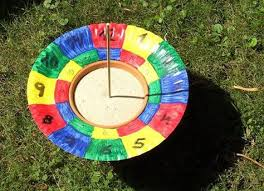

Egy átlagos szerdai ebédszünet során különös jelenetnek lehettek tanúi a diákok az iskola menzáján. Három tizenegyedikes egy padra állva próbált egy pizzás csigából és két ketchupos tasakból „napórát” építeni. A jelenséget egy tizedikes dokumentálta, aki később azt állította, hogy ez „valószínűleg valami csoportos prezentáció része”. A menzás személyzet látványosan úgy tett, mintha nem látná az egészet, miközben a sorban állók próbálták kitalálni, ez most tudomány, művészet vagy csak az unalom egyik fejlettebb formája. A helyzet akkor csúcsosodott ki, amikor valaki jegyzetfüzettel elkezdett körbejárni, és szavazást indított arról, hogy az installáció vajon „absztrakt” vagy „szomorú valóság”. A projekt sorsa végül azzal zárult, hogy az egyik szereplő véletlenül ráült a napórára, mire az egész visszaalakult ebéddé.
